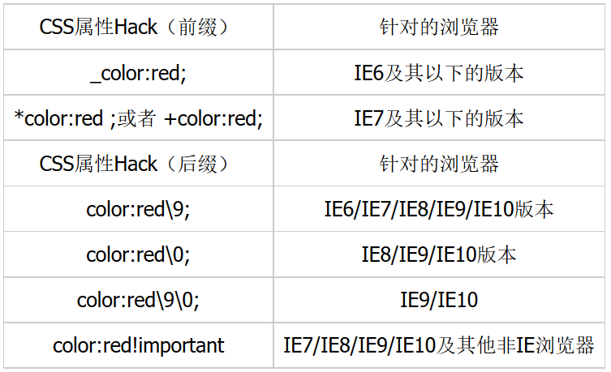
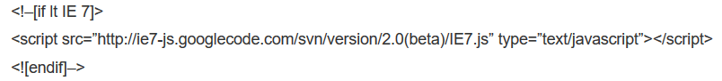
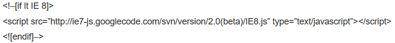

分享人：余翼
目录
1.背景介绍
2.知识剖析
3.常见问题
4.解决方案
5.方法比较
6.扩展思考
7.参考文献
8.更多讨论
由于各浏览器对页面的解析不同，会导致页面在不同浏览器中显示的样式不一致， 为了保持页面的统一，经常需要对浏览器进行兼容性问题的调试。
CSS Hack的概念
面对浏览器诸多的兼容性问题，经常需要通过修改CSS样式来调试， 其中用的最多的就是CSS Hack。所谓CSS Hack就是针对不同的 浏览器书写不同的CSS样式，通过使用某个浏览器单独识别的样 式代码，控制该浏览器的显示效果
由于不同浏览器的很多标签的默认间距是有差别的，所以样式重置就显得尤为重要， 否则网页很容易在不同浏览器上出现较大差异甚至是不能使用
快速解决方法: 直接使用通配符来将自带的margin和padding初始值设为0 *{margin:0;padding:0;}
cursor:hand VS cursor:pointer
firefox不支持hand，但ie支持
快速解决方法: 统一使用pointer
一般主流浏览器用 opacity:0.6，但是IE不识别这个属性
快速解决方法: ie的透明性需要用filter:Alpha(Opacity=60)
在IE7和FF中width宽度不包括padding，在IE6中包括padding.
解决方法: 在此基础上进行针对性设置
设置为float的div在ie下设置的margin会加倍。这是一个ie6都存在的bug
快速解决方法: 在这个div里面加上display:inline
上面问题中给出的快速解决方法不具备普遍性，使用了可能会导致其他问题，有没有更加普遍性的方法呢？
4.1 使用CSS选择器Hack
CSS选择器Hack是指通过在CSS选择器的前面， 加上一些只有特定浏览器才能识别的Hack前缀，来控制不同的CSS样式
IE6及IE6以下版本识别的选择器Hack
书写CSS样式时，如果希望此样式只对IE6及IE6以下版本的浏览器生效，可以使用IE6及以下版本的选择器Hack，其基本语法如下：
* html 选择器{样式代码}
IE7版本识别的选择器Hack
书写CSS样式时，如果希望此样式只对IE7版本的浏览器生效，可以使用IE7版本的选择器Hack，其基本语法如下：
*+html 选择器{样式代码}
目前最常见的是
*html *前缀只对IE6生效
*+html *+前缀只对IE7生效
@media screen\9{...}只对IE6/7生效
@media \0screen {body { background: red; }}只对IE8有效
@media \0screen\,screen\9{body { background: blue; }}只对IE6/7/8有效
@media screen\0 {body { background: green; }} 只对IE8/9/10有效
@media screen and (min-width:0\0) {body { background: gray; }} 只对IE9/10有效
@media screen and (-ms-high-contrast: active), (-ms-high-contrast: none) {body { background: orange; }} 只对IE10有效
等等
4.2 使用CSS属性Hack

hack方式-条件注释法
这种方式是IE浏览器专有的Hack方式，微软官方推荐使用的hack方式。举例如下
只在IE下生效
其他浏览器的识别符
Firefox: -moz-
Chrome、Safari: -webkit-
Opera: -o-
IE: -ms-
除了上面列举的例子，浏览器兼容问题还有很多很多，不同的情况适合使用不同的方法， 对于一些具体问题的快速解决办法，适合于代码量较小的情况。而对于代码量比较大，那么如果依旧使用改变某个 属性值来解决兼容性问题，则很容易牵一发而动全身，影响周边元素的属性设置，或者改好了这个浏览器的问题，又引起其他浏览器的问题，这种情况 下就比较适合使用Hack方法
CSS hack利弊
一般情况下，我们尽量避免使用CSS hack，但是有些情况为了顾及用户体验实现向下兼容，不得已才使用hack。比如由于IE8及以下版本不支持CSS3,而我们的项目页面使用了大量CSS3新属性在IE9/Firefox/Chrome下正常渲染，这种情况下如果不使用css3pie或htc或条件注释等方法时,可能就得让IE8-的专属hack出马了。使用hack虽然对页面表现的一致性有好处，但过多的滥用会造成html文档混乱不堪，增加管理和维护的负担。
Hack技巧有它的局限性，那么除了Hack技巧还有哪些方法来解决浏览器兼容问题？
遇到js兼容问题该如何解决？
引用js兼容文件，强制浏览器按照某种模式来解析

使IE5,IE6兼容到IE7模式

使IE5,IE6,IE7兼容到IE8模式
大家遇到过哪些兼容性问题，以及是如何解决的？
感谢大家观看
BY :景鑫/余翼